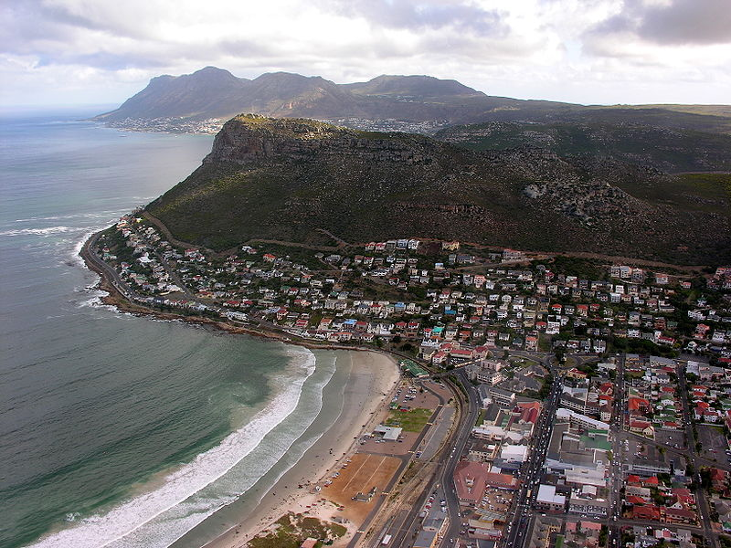
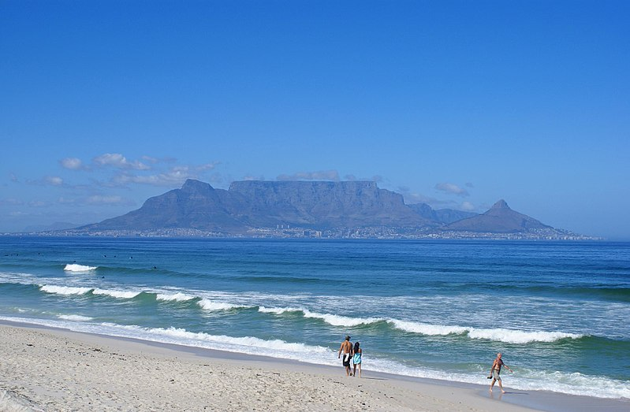
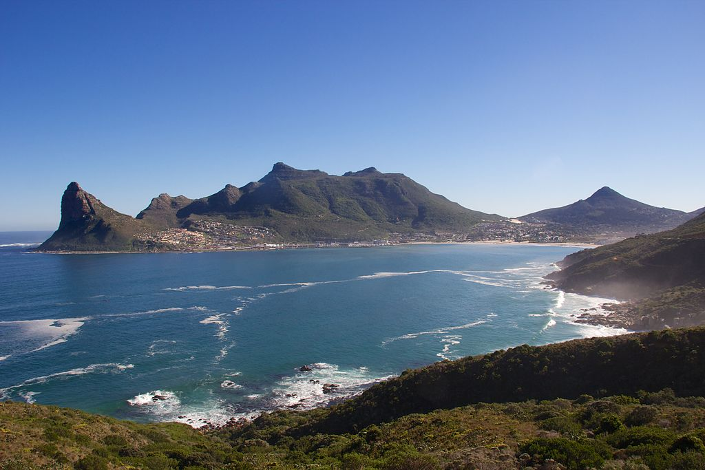
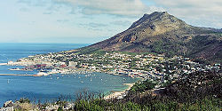
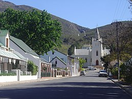
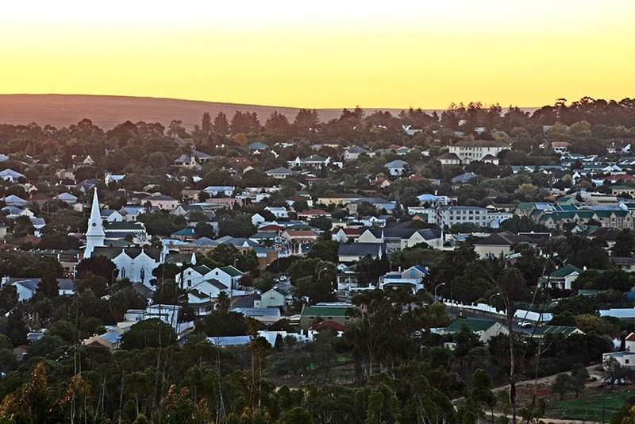
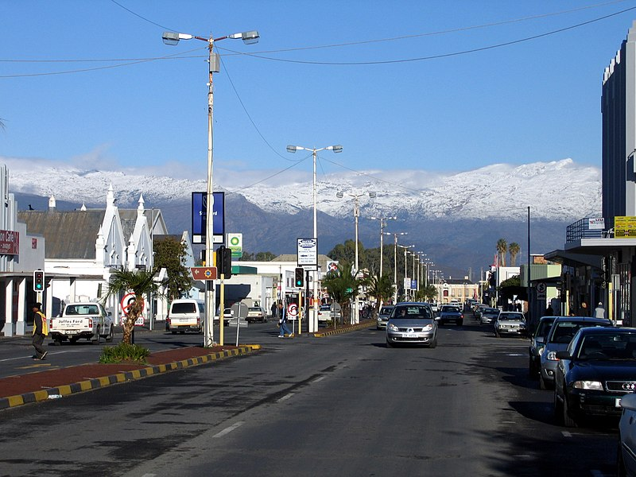

Fish Hoek
Fish Hoek is popular as a residence for commuters, retired people and holidaymakers alike....

Cape Town
Who doesnt wish to be in Cape Town...

Hout Bay
Originally made of two farms...

Simons Town
Home to the navy base...

Montague
Montagu was founded on the farm "Uitvlugt" in 1851...

Tulbagh
A very hot location...

Malmesbury
Malmesbury is a town of approximately 36,000 inhabitants ...

Worcester
The largest town in the Western Cape's interior region...